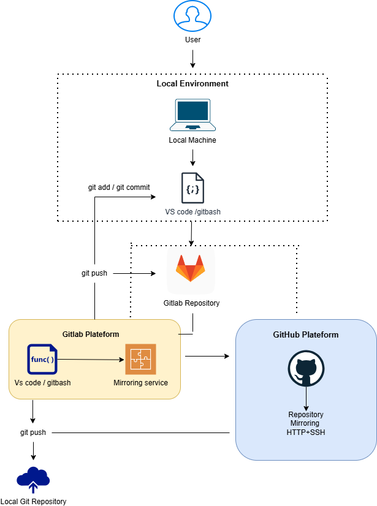

What is Version Control System?
Hosting a dynamic website using Amazon Linux, Nginx, MariaDB, PHP, and PHP-FPM on AWS.
Read More
Git: Working Directory → Staging Area → Commit
This repository explains how files move from the Working Directory to the Staging Area and finally into a Commit in Git.
Read More
Git Interview Question
This repository contains a collection of commonly asked Git interview questions along with their answers.
Read More

Repository Mirroring from local machine to Gitlab and Github
We can mirror repositories by configuring multiple Git remotes or using git push --mirror to sync all branches and tags across GitHub and GitLab.
Read More